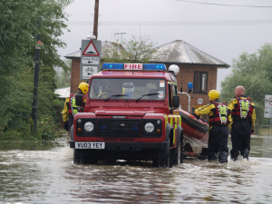
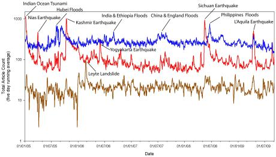
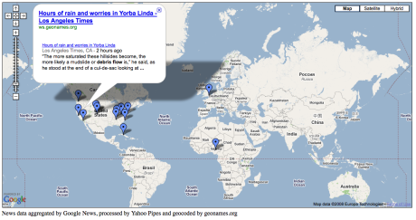

MY RESEARCH
I am currently a postgraduate research engineer working at the Urban Sustainability and Resilience Centre (USAR), which is part of the Department of Civil, Environmental and Geomatic Engineering (CEGE) at University College London.
In 2012 I received a full EngD studentship from USAR and the Engineering and Physical Sciences Research Council (EPSRC) to work with the British Red Cross for four years on a project aimed at creating a geographical information system (GIS) tool to support the work of the British Red Cross and improve the understanding of urban resilience in vulnerable people/the elderly in times of crisis.
At present I am working on a supplementary project with the British Red Cross to create an open source GIS index to examine UK flood vulnerability and support the British Red Cross’s emergency response and preparation work. The objective of the project is to identify vulnerable communities throughout the UK who may be at increased risk of flooding based upon open source demographic and socio-economic data.
British Red Cross Floods Study...
Before joining UCL I was a researcher at the British Red Cross where I led a national floods research study aimed at enhancing the voluntary sector’s collective understanding of the needs of flood affected individuals and communities with a view to understanding how they are impacted and how recovery is best supported. The research was both qualitative and quantitative and involved in-depth interviews and questionnaire development. In addition, my other research at the British Red Cross was focused on issues as broad as climate change and extreme weather, community resilience and vulnerability, UK hazard and risk, and UK healthcare reform.
The UK’s climate is changing. That is an irrefutable fact. The likely future changes are going to be much wetter winters and more intense summer storms, both of which will seriously augment flood risk in the UK. Heavy or persistent rain can overwhelm watercourses and drainage systems, clog already waterlogged catchment areas and raise groundwater levels. The rapid onset of such events makes predicting and pinpointing their impact difficult. It is therefore necessary for communities and individuals to adequately prepare for events to limit the potential impact.
The aim of the British Red Cross floods research study is to enhance our collective understanding of the needs of flood affected individuals and communities with a view to understanding how they are impacted and how recovery is best supported.
Specifically, the objectives of the study are:
Throughout the UK, 5.2 million properties are at risk from flooding and the annual cost of flood damages is nearly £1 billion. The summer 2007 floods alone affected nearly half of the UK, led to the deaths of 13 people and caused in excess of £3 billion in damages.

However, it is not just the material damage caused by flooding that should be considered. Floods have been shown to have major and long lasting impacts on a person’s physical and mental health and wellbeing. The physical strain of dealing with the flooding and the possibility of being injured during the event, coupled with the mental strain of losing one’s possessions or being forced out of one’s home, as well as the potential loss of family members or friends, all have a significant impact on an individual’s, and community’s, mental and physical health.
It is hoped that the outputs of the research study will be:
Media, Representation, Persistence, and Relief...
My research, undertaken at Durham University, involved producing a custom-built global hazard-media database to catalogue fatal natural hazard events over the past five years and use quantitative and qualitative assessment techniques to examine the relationship between the magnitude of the event and the subsequent media coverage and ensuing humanitarian assistance.
Basically, we tracked fatal natural hazard events from all across the globe using news reports and looked at what happened, how the media covered the event, and how it affected relief efforts.
The database produced is now fully automated and is continuing to grow and will be used for future research at Durham University and the International Landslide Centre. The results from my work have been submitted for academic publication and have received praise for the ‘bold and innovative methodology’ and its ‘extension to the current understanding of natural hazards’.
You can read the full thesis here, but it’s very VERY long. So, if you really want to know what we did and what we found, you can read a research outline here, read the posts below or get in touch and ask me. I’ll be more than happy to talk about it and answer any questions you may have.
Overall, the coverage of emergency crises in the past few years has been continuously overshadowed by the war in Iraq, the global ‘War on Terror' and the global economic crisis. Coverage of these ongoing events still grossly overshadow coverage of any emergency crisis on a daily basis. However, when a large hazard event does occur, such as the 2008 Sichuan earthquake, coverage of natural hazard events can increase dramatically.
Due to recent high profile events, such as the Sichuan earthquake, Hurricane Katrina, and the more recent Pakistan floods, events of this nature can achieve major media coverage. However, landslides, which are of a smaller-scale in terms of fatalities and damage, are often omitted from media coverage and, as such, receive much less humanitarian assistance.
Our goal was to track the global occurrence of natural hazards, namely earthquakes, floods and landslides, and examine the trends within their occurrence (when and where they occur), the patterns within their press coverage (level of coverage, length of coverage, location of coverage) and the subsequent effects upon the level of relief aid attained.
To do this, we developed a way to monitor the amount of press coverage produced for natural hazards on a daily basis. By using a custom-built news aggregator we could track when and where hazard news stories were published.
Previous work at Durham University had found the news media to be an excellent source of hazard news information and our system built upon this research by utilising local-level news sources to uncover the events that are often missed by the wider press.
In doing this, we could gain a better understanding of when and where hazard events occur, produce a more accurate and detailed database of global hazard events, and uncover ways of using the press to further improve hazard awareness and increase the amount of relief aid attained.
Monitoring Hazards...
Below is the recorded hazard news media coverage for the period 01/01/2005 to 01/07/2009. Click the image for a full screen view.
As you can see, flood coverage dominates the data, with a consistently high number of daily news articles. Earthquake coverage is, on average, lower but is made up of a number of large peaks that coincide with large earthquake events, like the Sichuan earthquake. In comparison, landslide coverage is consistently low, with only one major peak coinciding with the Southern Leyte landslide.
What we wanted to know was whether these trends correspond to the frequency of the events, the physical magnitude of the events, the actual impact of the events (fatalities/damage caused) or the perceived impact of the events (whether or not people consider events to be dangerous and therefore news worthy).

During my research at Durham University we grew sick of displaying all of our data on line graphs and bar charts and so we experimented with a number of new data visualisation techniques. Our data is predominantly geographical in nature so we experimented with new mapping techniques, but we also researched data streams, world clouds, heat maps and streamgraphs.
Dr Sim Reaney, a RCUK Research Fellow at Durham University, and one of my research supervisors, developed a hazard news mapping tool that displays current news stories and their origin on a Google Map. Each of the news report pegs can be clicked and will display the headline, an abstract of the article and a link to the article.